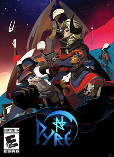

HADES
About the game:
Hades is a rogue-like dungeon crawler in which you defy the god of the dead as you hack and slash your way out of the Underworld of Greek myth.
The reason I enjoy it so much is because the soundtrack is very immersive, and the repetitive nature of it make it interesting and challenging
The creators
The creators of the game are Super Giant Games, a small developer with big ambitions
They've also developed other games, including Pyre, Transistor and Bastion
 

For more information on HADES, you can visit their official website
Back Home